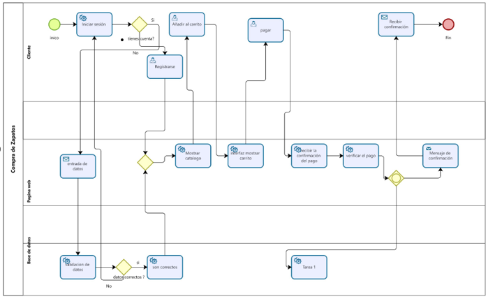
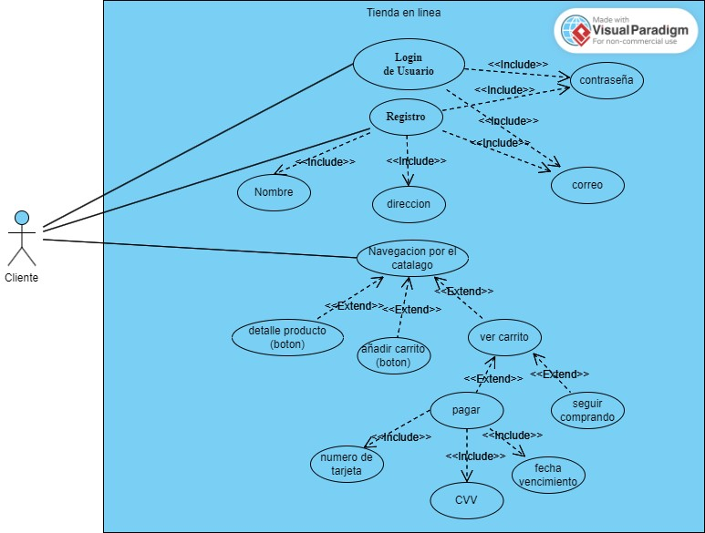

- Inicio del Proceso: El usuario inicia sesión en la página web.
- Selección de Producto: El usuario navega por el catálogo de zapatos y selecciona un par para comprar.
- Añadir al Carrito: El usuario agrega el par de zapatos seleccionado al carrito de compras.
- Proceso de Pago: El usuario procede a realizar el pago.
- Confirmación: La página web verifica el pago. La página web actualiza la base de datos con la compra realizada.
- Fin del Proceso: El usuario recibe una confirmación de la compra.
- Inicio del Proceso: Interfaz para iniciar sesión y navegación por los productos.
- Selección de Producto: Presentación de catálogo y opciones para seleccionar zapatos.
- Añadir al Carrito: Interacción para agregar el producto seleccionado al carrito.
- Confirmación: Verificación del pago y actualización de la base de datos.
- Fin del Proceso: Mensaje de confirmación de la compra al usuario.
- Inicio del Proceso: Registra la información de inicio de sesión del usuario.
- Recepción de Pedido: Guarda los detalles del pedido en la base de datos.
- Actualización de Stock: Reduce la cantidad de zapatos disponibles en el inventario.
- Fin del Proceso: Confirma la transacción y el estado actualizado del inventario.
- Inicio del Proceso (Usuario): La página web debe proporcionar una interfaz segura y fácil para que los usuarios inicien sesión.
- Selección de Producto (Usuario): La página web debe presentar un catálogo de zapatos de manera clara y organizada.
- Añadir al Carrito (Usuario): Debe haber una funcionalidad que permita a los usuarios agregar productos al carrito de compras.
- Inicio del Proceso (Usuario): La interfaz de inicio de sesión debe ser intuitiva y fácil de usar.
- Selección de Producto (Usuario): La presentación del catálogo debe ser atractiva y fácil de navegar.
- Añadir al Carrito (Usuario): La interacción para agregar productos al carrito debe ser clara y sin complicaciones.
- Inicio del Proceso (Usuario): Se deben implementar medidas de seguridad para proteger la información de inicio de sesión.
- Proceso de Pago (Usuario): La página web debe garantizar la seguridad de los datos de pago durante la transmisión.
- Inicio del Proceso (Página Web): La página web debe cargar rápidamente para proporcionar una experiencia de usuario fluida.
- Proceso de Pago (Página Web): La verificación del pago debe realizarse de manera eficiente y sin demoras.
- Actualización de Stock (Base de Datos): La base de datos debe integrarse de manera efectiva con la página web para actualizar el inventario después de cada compra.
- Inicio del Proceso (Base de Datos): El sistema debe ser capaz de manejar y mantener registros de información de inicio de sesión de usuarios.
- Fin del Proceso (Base de Datos): La base de datos debe ser fácil de mantener y permitir actualizaciones de inventario de manera eficiente.
- Proceso de Pago (Página Web): La página web debe ser confiable al verificar y procesar los pagos de manera precisa.
Imagina que entras a la página y te logueas. Una vez adentro, buscas y seleccionas esos zapatos geniales que quieres. Los añades al carrito y decides comprarlos. Entonces, ingresas los datos de pago y la página se encarga de verificar que todo esté bien en la base de datos, confirmando tu compra. Aquí viene lo bueno: después de confirmar, la base de datos actualiza el inventario, quitando esos zapatos de la lista disponible. ¡Y listo! Has completado el proceso de compra, y esos zapatos que elegiste ya no están disponibles para otros compradores.


